第7讲 · 一元函数微分学的应用（三）——物理应用与经济应用
据《张宇考研数学基础30讲·高等数学分册（2026版）》整理 · 覆盖原书 P233–P241
本讲导读
全书最短的一讲（正文 9 页），内容按考种切开：数一、数二只考物理应用与相关变化率，数三只考复利与经济应用，互不越界，先对号入座再学。讲首导学框写得明白（印P233）：本讲考题就是物理应用与相关变化率、复利与连续复利、导数的经济应用，选择、填空、解答题都出；目标两条——"了解导数的物理意义，会用导数描述一些物理量（仅数学一、数学二）；了解导数的经济意义（含边际与弹性的概念）（仅数学三）"；点名的重难点只有一个——相关变化率。张宇在讲首还强调一句定心丸：用数学工具解决应用问题，不会出现过难过于专业的问题——所以这讲不怕背景陌生，怕的是模板不熟。
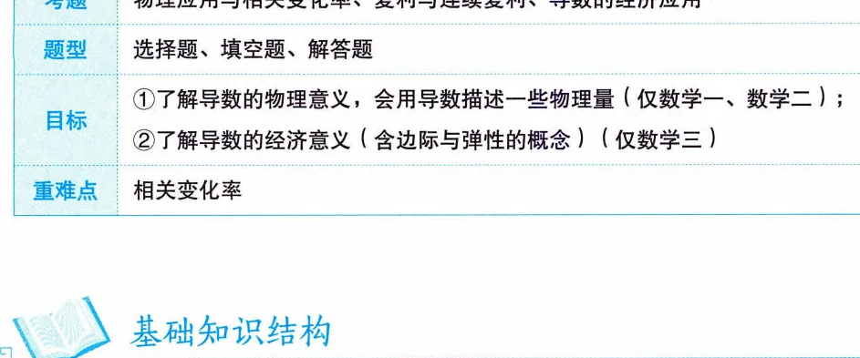
（站注·真题大数据）本讲内容属第三梯队考点，但特点鲜明：一考就是 10 分以上的大题——数一的物理应用、数三的经济应用各自专属，隔年突袭；相关变化率近年有回潮迹象。分值性价比极高：模板总量比任何一讲都少，背熟定义与句式就是稳定得分点，属于"低频高回报"型考点。
重难点相关变化率的套路极稳：建立联系各变量的等式，两边对时间求导，把已知变化率代入解出未知变化率，例7.1 的方法总结原文就这两步。经济应用（边际、弹性）对数三是送分题型，记牢定义和"谁对谁求导"就能拿分；更综合的物理应用要和微分方程结合，原书明确说详细放到第15讲，这里只留一个伏笔（\(a=v\dfrac{dv}{ds}\)）。学完回到讲首知识结构图自测：能默出整棵树、说清自己考种考哪一半，才算过关。
知识框架
- 一、物理应用与相关变化率（仅数一、数二）
- 物理应用
- 相关物理概念三条：位移对时间的变化率（速度）、速度对时间的变化率（加速度）、牛顿第二定律 \(F=ma\)
- 运动方程 \(s=s(t)\)：\(v=s'(t)\)，\(a=v'=s''(t)\)
- 变形 \(a=\dfrac{dv}{dt}=\dfrac{dv}{ds}\cdot\dfrac{ds}{dt}=v\dfrac{dv}{ds}\)（含 \(s,v\) 不显含 \(t\) 的问题用，第15讲伏笔）
- ★相关变化率（本讲重难点）
- 链式关系 \(\dfrac{dA}{dB}=\dfrac{dA}{dC}\cdot\dfrac{dC}{dB}\)：已知两个变化率解第三个
- 正式定义（参数方程形式）：\(\dfrac{dy}{dt}=f'(x)\dfrac{dx}{dt}\)
- 解题两步：①建立相关变量方程；②两边对 \(t\) 求导，由已知求未知
- 物理应用
- 二、复利与连续复利（仅数三）
- 复利公式 \(A_m=A(1+r)^m\)
- 一年计息 1 次：\(A_t=A(1+r)^t\)
- 一年计息 \(n\) 次：\(A_t=A\left(1+\dfrac{r}{n}\right)^{nt}\)
- 连续复利（\(n\to\infty\)）：\(A_t=Ae^{rt}\)
- 现值：\(t\) 年末收入 \(R\) 的现值 \(A(t)=Re^{-rt}\)
- 复利公式 \(A_m=A(1+r)^m\)
- 三、导数的经济应用（仅数三）
- 经济学中常见的函数
- 需求 \(Q=Q(p)\)（一般单调减）、供给 \(q=q(p)\)（一般单调增）
- 成本 \(C=C_1+C_2(Q)\)（固定+可变）、平均成本 \(AC=\dfrac{C}{Q}\)
- 收益 \(R=pQ\)、利润 \(L=R(Q)-C(Q)\)
- 边际函数与边际分析
- 边际值 \(f'(x_0)\)：\(x\) 增 1 个单位，\(f(x)\) 近似改变 \(|f'(x_0)|\) 个单位
- \(MC=C'(Q)\)、\(MR=R'(Q)\)、\(ML=L'(Q)\)
- 弹性函数与弹性分析
- \(\eta=\dfrac{x}{y}y'\)：\(x\) 改变 1%，\(y\) 改变 \(|\eta|\%\)
- 需求 / 供给 / 收益的价格弹性（符号口径是考点）
- 结论 \(\dfrac{dR}{dp}=Q(1-\eta)\)：\(\eta<1\) 提价增收，\(\eta>1\) 降价增收
- 经济学中常见的函数
核心概念与定理
一、物理应用（仅数一、数二）
三个物理概念全是导数：设质点运动的位移关于时间的函数为 \(s=s(t)\)（书称运动方程/位移方程），则位移对时间的变化率是速度，速度对时间的变化率是加速度，再加牛顿第二定律 \(F=ma\)：
\[ v(t)=\lim_{\Delta t\to 0}\frac{\Delta s}{\Delta t}=s'(t),\qquad a(t)=\lim_{\Delta t\to 0}\frac{\Delta v}{\Delta t}=v'(t)=s''(t). \]
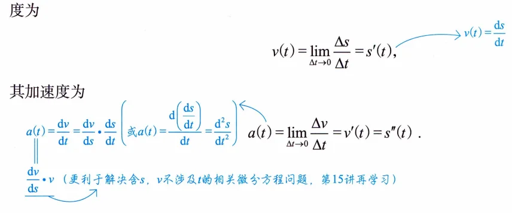
书上紧跟一句"这就是导数的物理意义"——第3讲那句"导数是变化率"在这里落了地。加速度还有一个值得抄进笔记本的改写：
\[ a=\frac{dv}{dt}=\frac{dv}{ds}\cdot\frac{ds}{dt}=\frac{dv}{ds}\cdot v, \]
书上手写批注点破用途：这个形态更利于解决含 \(s\)、\(v\) 而不显含 \(t\) 的（相关）微分方程问题，第15讲会正式登场，现在混个脸熟。见到 \(v\dfrac{dv}{ds}\) 别愣，它就是 \(a\)。
二、相关变化率（本讲重难点）
研究的就是链式关系的"知道俩求第三个"：\(\dfrac{dA}{dB}=\dfrac{dA}{dC}\cdot\dfrac{dC}{dB}\)。原书两条展开（印P234）：
- 已知 \(\dfrac{dA}{dB}\) 与 \(\dfrac{dC}{dB}\)，两边约去 \(\dfrac{d}{dB}\) 即得 \(\dfrac{dA}{dC}\)——由已知变化率解出未知变化率；
- \(A,B,C\) 可以换成任何实际的量，原书举的例子是冰块：质量 \(m\) 对温度 \(c\) 随时间 \(t\) 的变化率满足 \(\dfrac{dm}{dt}=\dfrac{dm}{dc}\cdot\dfrac{dc}{dt}\)，知道升温度数与融化率就能算质量变化率。
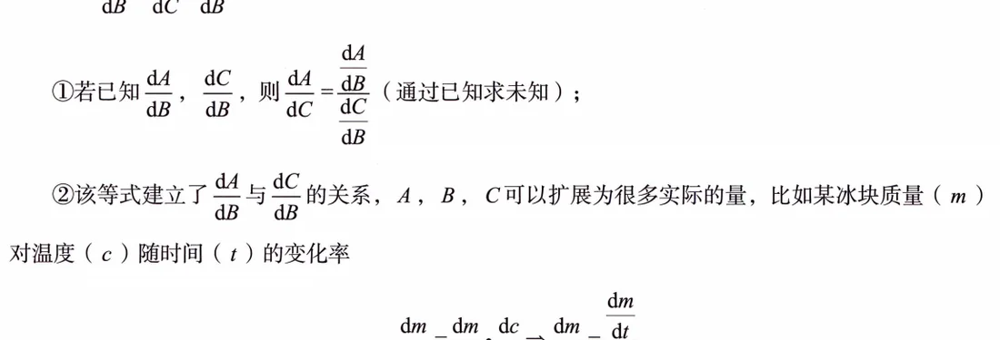
正式定义：若 \(y=f(x)\) 由参数方程 \(\begin{cases} x=x(t), \\ y=y(t) \end{cases}\) 确定且可导，则
\[ \frac{dy}{dt}=\frac{dy}{dx}\cdot\frac{dx}{dt}=f'(x)\frac{dx}{dt}, \]
即 \(\dfrac{dy}{dt}\) 与 \(\dfrac{dx}{dt}\) 被 \(f'(x)\) 联系在一起——这种相互关联的变化率就叫相关变化率。
原书配了两条注，都值得抄：注一，微分学中经济应用较多，积分学中物理应用较多（对应第12讲，提前心里有数）；注二，相关变化率单独出题不难，难的是和微分方程结合的综合题（速度、位移、加速度齐上），那类题放到第15讲详细讲。基础阶段把"单独出题"的模板焊死即可。
三、复利与连续复利（仅数三）
复利公式 \(A_m=A(1+r)^m\)：\(A\) 本金，\(r\) 每期利率，\(m\) 期数。按一年计息频率分三种情形（印P235）：
\[ A_t=A(1+r)^t\ \text{（一年计息 1 次）},\qquad A_t=A\Bigl(1+\frac{r}{n}\Bigr)^{nt}\ \text{（一年计息 } n \text{ 次）},\qquad A_t=Ae^{rt}\ (n\to\infty,\ \text{连续复利}). \]
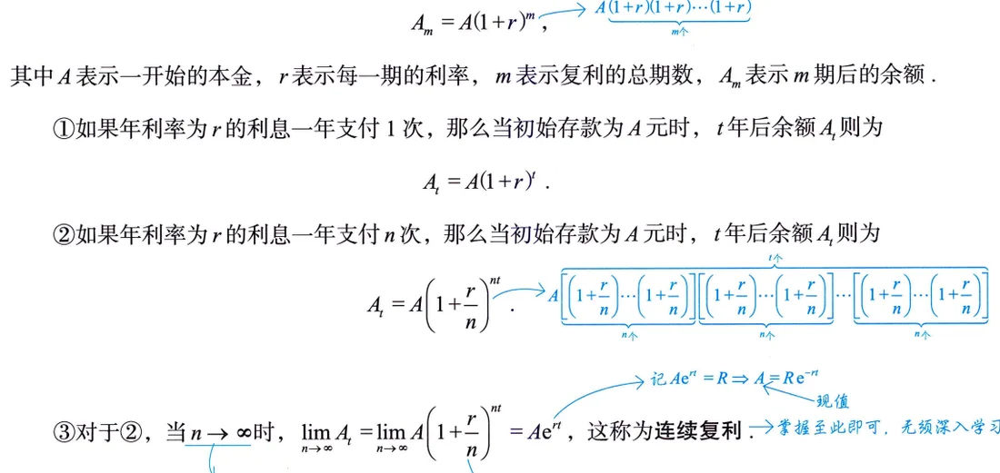
第三式是第二式取极限：\(\lim\limits_{n\to\infty}\left(1+\dfrac{r}{n}\right)^{nt}=e^{rt}\)，正是第1讲的 \(1^{\infty}\) 型重要极限（\(\lim u^v=e^{\lim v(u-1)}\)）——经济应用骨子里还是极限计算。原书注：考试会明确告知是哪种情形，别自己瞎选。反方向是现值：按连续复利折算，\(t\) 年末收入 \(R\) 的现值为
\[ A(t)=Re^{-rt}, \]
与终值公式 \(Ae^{rt}\) 互为逆运算，例7.2 考的就是它。
四、经济学中常见的函数（仅数三）
五套函数一次记全（印P236）：
- 需求函数 \(Q=Q(p)\)：价格 \(p\) 越高购买量越少，一般单调减少；
- 供给函数 \(q=q(p)\)：价格越高厂商越愿意供给，一般单调增加；
- 成本函数 \(C=C_1+C_2(Q)\)：固定成本 \(C_1\) 加可变成本 \(C_2(Q)\)，都折成产量 \(Q\) 的函数；平均成本 \(AC=\dfrac{C}{Q}\)；
- 收益函数 \(R=pQ\)；
- 利润函数 \(L=R(Q)-C(Q)\)。
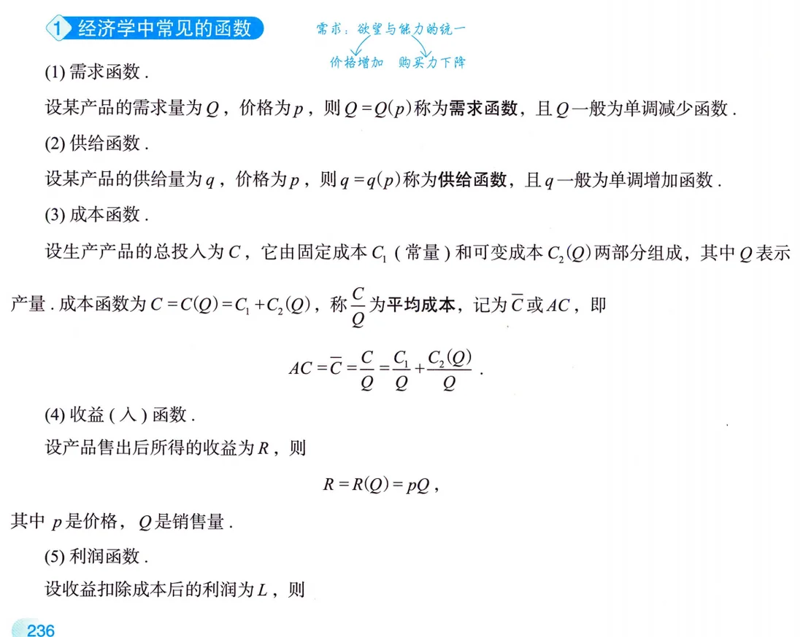
原书注是做题的宪法：无特殊说明时，需求与供给函数以价格 \(p\) 为自变量，成本、收益与利润函数以产量 \(Q\) 为自变量。谁对谁求导、弹性对谁算，全由这条口径定；越界的题面一定会专门说明（比如"收益对价格的弹性"就要求你先把 \(R\) 写成 \(R(p)=pQ(p)\)）。
五、边际函数与边际分析（仅数三）
\(f'(x)\) 叫边际函数，\(f'(x_0)\) 叫 \(x=x_0\) 处的边际值。来历是微分近似：\(\Delta y\approx dy\)，取 \(\Delta x=1\) 得
\[ f(x_0+1)-f(x_0)\approx f'(x_0), \]
即在 \(x_0\) 处 \(x\) 增加 1 个单位，\(f(x)\) 近似改变 \(|f'(x_0)|\) 个单位，符号定同向还是反向。注意"近似"二字——边际是导数不是真增量，答题时这个字不能丢。
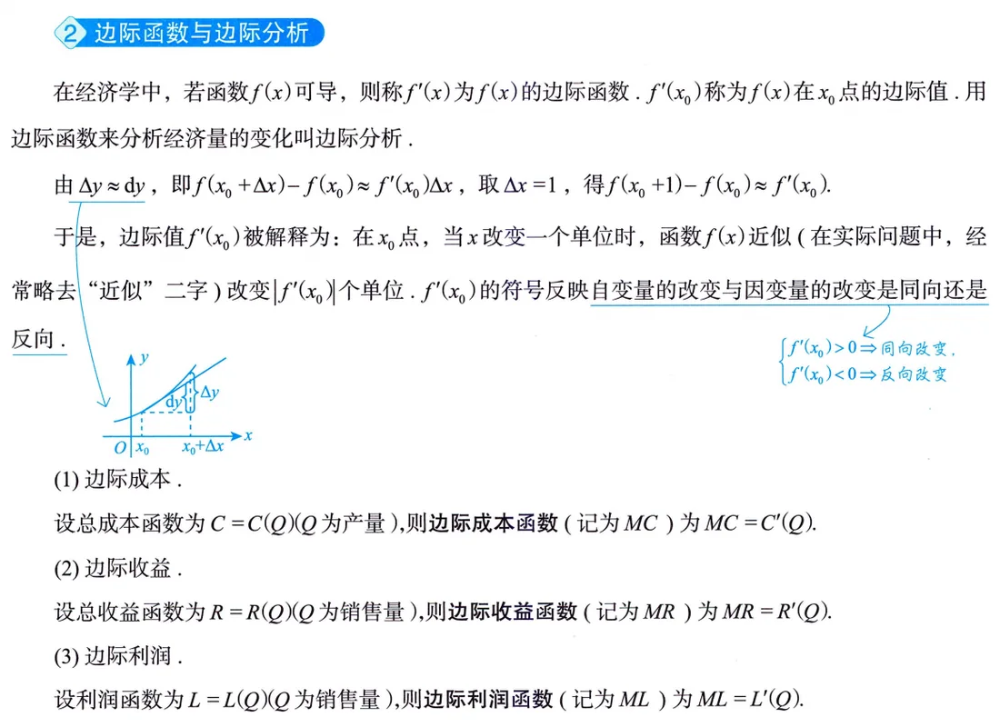
三件套：边际成本 \(MC=C'(Q)\)、边际收益 \(MR=R'(Q)\)、边际利润 \(ML=L'(Q)\)。数三解答题爱追问"经济意义"，句式照例7.3 背：销售第 \(Q_0+1\) 件商品所得（利润）约为 \(L'(Q_0)\) 元。
六、弹性函数与弹性分析（仅数三）
边际衡量"变 1 个单位"，弹性衡量相对变化的灵敏度——因变量相对变化与自变量相对变化之比的极限（印P237）：
\[ \eta=\lim_{\Delta x\to 0}\frac{\Delta y/y}{\Delta x/x}=\frac{x}{y}y'=\frac{x}{f(x)}f'(x)\ \Bigl(=\frac{Ey}{Ex}\Bigr),\qquad \eta\Big|_{x=x_0}=\frac{x_0}{f(x_0)}f'(x_0), \]
后者叫点弹性。\(\dfrac{Ey}{Ex}\) 是教材惯用记号，认得即可。
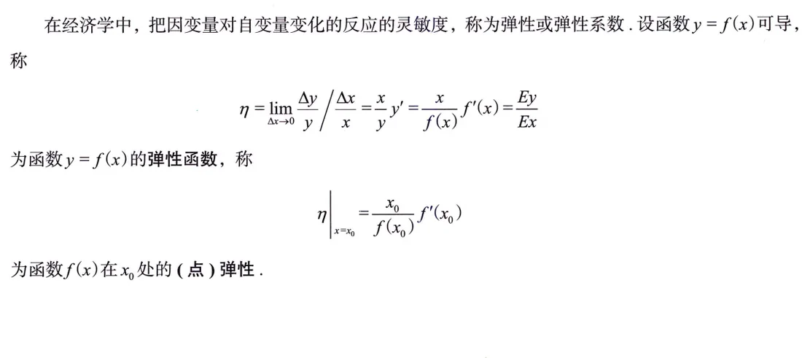
解读（原书口径）：\(x\) 改变 1%，\(y\) 改变 \(|\eta|\%\)。弹性是无量纲的相对比率，答题写"变化百分之几"，别写成"变化多少个单位"。公式本身是个"修正过的导数"：\(\eta=\dfrac{x}{y}\cdot y'\)，前缀 \(\dfrac{x}{y}\) 负责把绝对变化率折成百分比，所以记住套路——先求导，再乘 \(\dfrac{x}{y}\)。
七、三种价格弹性与核心结论 \(\dfrac{dR}{dp}=Q(1-\eta)\)（仅数三）
落到价格上（印P238）：
- 需求的价格弹性 \(\eta_d=\dfrac{p}{Q(p)}Q'(p)\)：因 \(Q'(p)<0\)，一般 \(\eta_d<0\)；题设要求 \(\eta_d>0\) 时，取 \(\eta_d=-\dfrac{p}{Q(p)}Q'(p)\)（考试最爱挖的符号坑）；
- 供给的价格弹性 \(\eta_s=\dfrac{p}{q(p)}q'(p)>0\)；
- 收益的价格弹性 \(\eta_r=\dfrac{p}{R(p)}R'(p)\)。
经济意义统一话术："价格升高（降低）1%，该量减少（增加）\(|\eta|\)%"——方向由函数单调性与符号口径共同决定，写清楚。
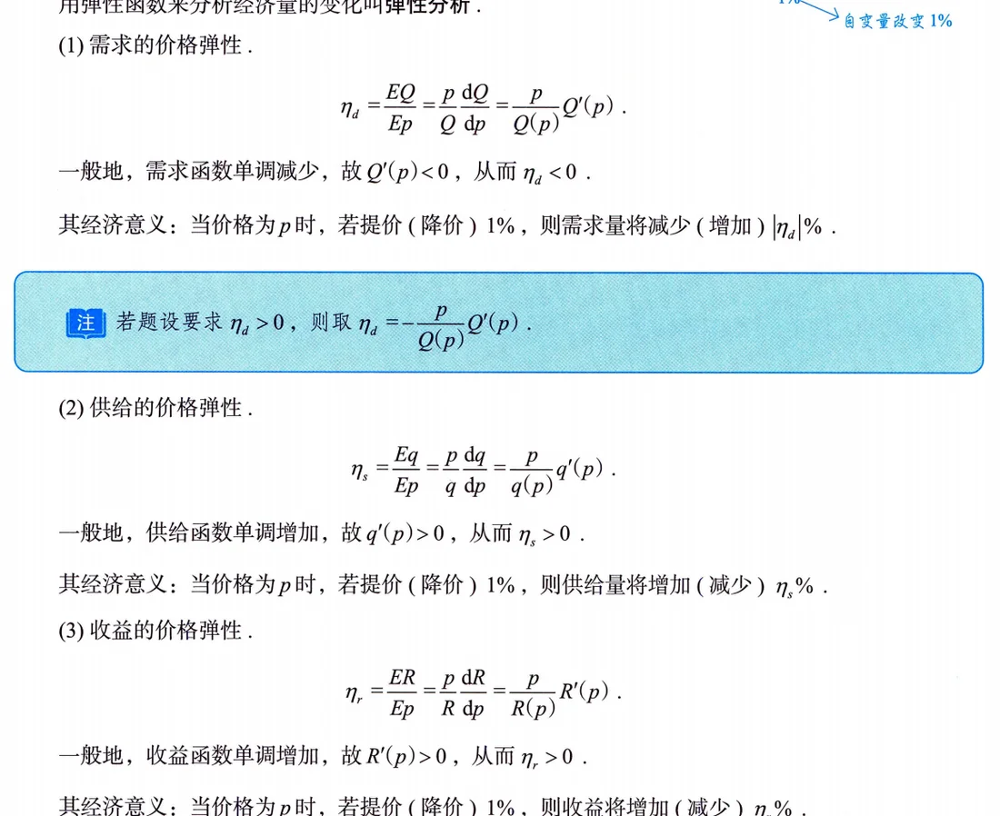
本讲最重要的一行推导（例7.4 现场推、例7.5 直接吃红利）：把收益 \(R=pQ(p)\) 两边对 \(p\) 求导，
\[ \frac{dR}{dp}=Q+p\frac{dQ}{dp}=Q\Bigl(1+\frac{p}{Q}\frac{dQ}{dp}\Bigr)=Q(1-\eta), \]
最后一步用的正是需求的符号口径 \(\eta=-\dfrac{p}{Q}\dfrac{dQ}{dp}\)。书上批注明说这式子可作为结论用。配套策略读法（例7.5）：\(\eta<1\)（缺乏弹性）时 \(\dfrac{dR}{dp}>0\)，提价收益增；\(\eta>1\)（富有弹性）时 \(\dfrac{dR}{dp}<0\)，降价收益增——"薄利多销"的数学版。
典型例题精讲
原书本讲共 5 道例题（例7.1–例7.5），数一数二只做例7.1，数三重点例7.2–例7.5，逐题收全。
例7.1 曲线上动点的相关变化率（数一、数二）
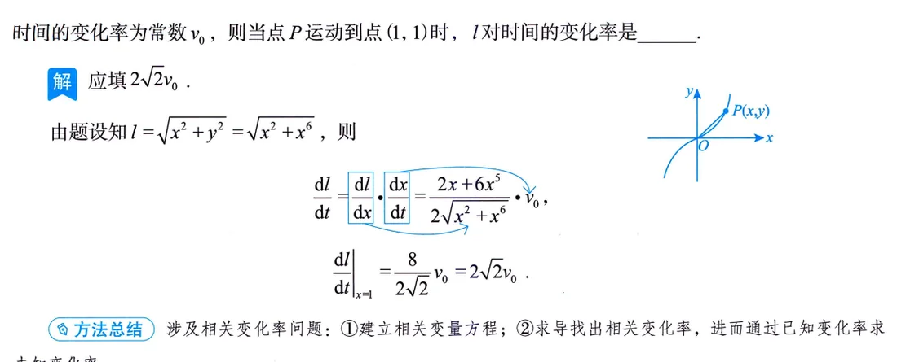
题面 动点 \(P\) 在曲线 \(y=x^3\) 上运动，记坐标原点与点 \(P\) 间的距离为 \(l\)。若点 \(P\) 的横坐标对时间的变化率为常数 \(v_0\)，求当 \(P\) 运动到点 \((1,1)\) 时 \(l\) 对时间的变化率。
思路 \(l\) 由 \(P\) 的位置（横坐标 \(x\)）完全确定，而 \(x\) 又随时间 \(t\) 变——典型的链式结构 \(\dfrac{dl}{dt}=\dfrac{dl}{dx}\cdot\dfrac{dx}{dt}\)。第一步先把 \(y=x^3\) 代入消元，把 \(l\) 写成单变量 \(x\) 的函数，再求导，最后才代 \(x=1\)。 要点 \[ l=\sqrt{x^2+y^2}=\sqrt{x^2+x^6},\qquad \frac{dl}{dt}=\frac{dl}{dx}\cdot\frac{dx}{dt}=\frac{2x+6x^5}{2\sqrt{x^2+x^6}}\cdot v_0. \] 代 \(x=1\)：\(\dfrac{8}{2\sqrt2}v_0=2\sqrt2\,v_0\)，故应填 \(2\sqrt2\,v_0\)。 注 原书方法总结就两步：①建立相关变量之间的方程；②对方程两边求导，找出相关变化率，由已知求未知。本题的"方程"靠几何关系（距离公式）+ 曲线方程消元得来；习题里那道抛物线（自测题 1）同款结构，务必亲手做一遍。
例7.2 连续复利 + 现值最大（数三）
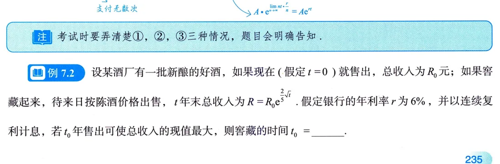
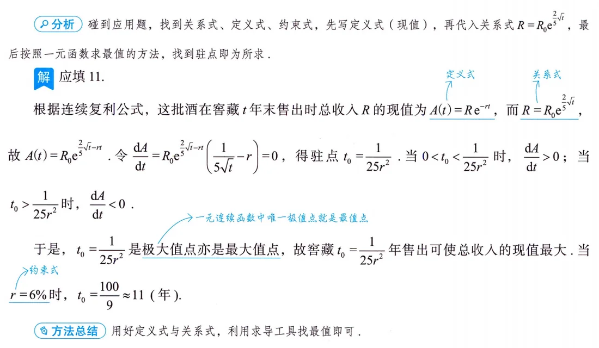
题面 一批酒若现在（\(t=0\)）出售，总收入为 \(R_0\)；若窖藏，\(t\) 年末按陈酒价格出售，总收入为 \(R=R_0e^{\frac{2}{5}\sqrt t}\)。设银行年利率为 \(r\)，按连续复利计息，问窖藏多少年售出可使总收入的现值最大？并求 \(r=0.06\) 时的值。
思路 原书【分析】给的就是通用打法：碰到应用题，找到关系式、定义式、约束式——先写定义式（现值 \(A(t)=Re^{-rt}\)），再代入关系式 \(R=R_0e^{\frac{2}{5}\sqrt t}\)，最后按一元函数求最值（找驻点、验极大）。 要点 \[ A(t)=R_0e^{\frac{2}{5}\sqrt t-rt},\qquad \frac{dA}{dt}=R_0e^{\frac{2}{5}\sqrt t-rt}\Bigl(\frac{1}{5\sqrt t}-r\Bigr). \] 令 \(\dfrac{dA}{dt}=0\) 得驻点 \(t_0=\dfrac{1}{25r^2}\)；当 \(0<t<\dfrac{1}{25r^2}\) 时 \(\dfrac{dA}{dt}>0\)，\(t>\dfrac{1}{25r^2}\) 时 \(\dfrac{dA}{dt}<0\)，故 \(t_0\) 是极大值点，又是唯一极值点，即最大值点。代 \(r=0.06\)：\[ t_0=\frac{1}{25\times 0.06^2}=\frac{100}{9}\approx 11 \text{（年）}. \] 注 收尾那句"唯一极值点即最值点"要用两侧导数正负（或二阶导）交代清楚，只令导数为零就下结论是要扣分的。这类"利率 + 增长 + 最值"三合一就是数三经济应用的经典大题骨架。
例7.3 边际利润与最值定价（数三）
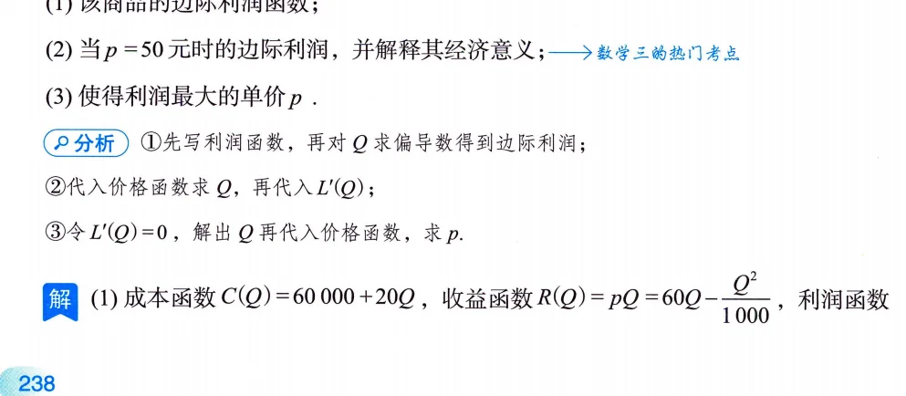
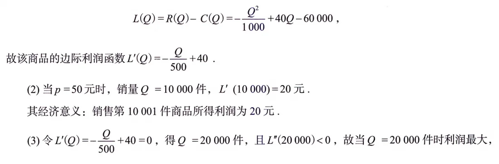
题面 某商品的成本为 \(C=60000+20Q\)（元），需求函数即价格 \(p=60-\dfrac{Q}{1000}\)（\(Q\) 为销量，产销平衡）。(1) 求销量 \(Q=10000\) 件（此时 \(p=50\) 元）时的边际利润，并说明其经济意义；(2) 求利润最大时的销量与单价。
思路 依次写三张表：成本已有，收益 \(R=pQ\)（把 \(p\) 用 \(Q\) 表出），利润 \(L=R-C\)，然后一切都从 \(L'(Q)\) 里读出来——第 (1) 问代值，第 (2) 问解方程。 要点 \(R=pQ=60Q-\dfrac{Q^2}{1000}\)，故 \[ L(Q)=60Q-\frac{Q^2}{1000}-(60000+20Q)=-\frac{Q^2}{1000}+40Q-60000,\qquad L'(Q)=-\frac{Q}{500}+40. \] (1) \(Q=10000\) 时 \(L'(10000)=-20+40=20\)（元），经济意义：销售第 10001 件商品所得利润约为 20 元。(2) 令 \(L'(Q)=0\) 得 \(Q=20000\) 件，且 \(L''(Q)=-\dfrac{1}{500}<0\)，故利润最大，此时 \(p=60-\dfrac{20000}{1000}=40\)（元）。 注 "解释经济意义"是数三专属热门考点，句式照原书背死："销售第 \(Q_0+1\) 件商品所得利润为 \(L'(Q_0)\) 元"——序数（第 10001 件）、"约为"、单位（元）三个要素一个不能少。第 (2) 问也可以用两侧导号代替 \(L''<0\)，都行，但必须有一步验证。
例7.4 收益弹性与结论 \(\dfrac{dR}{dp}=Q(1-\eta)\)（数三）
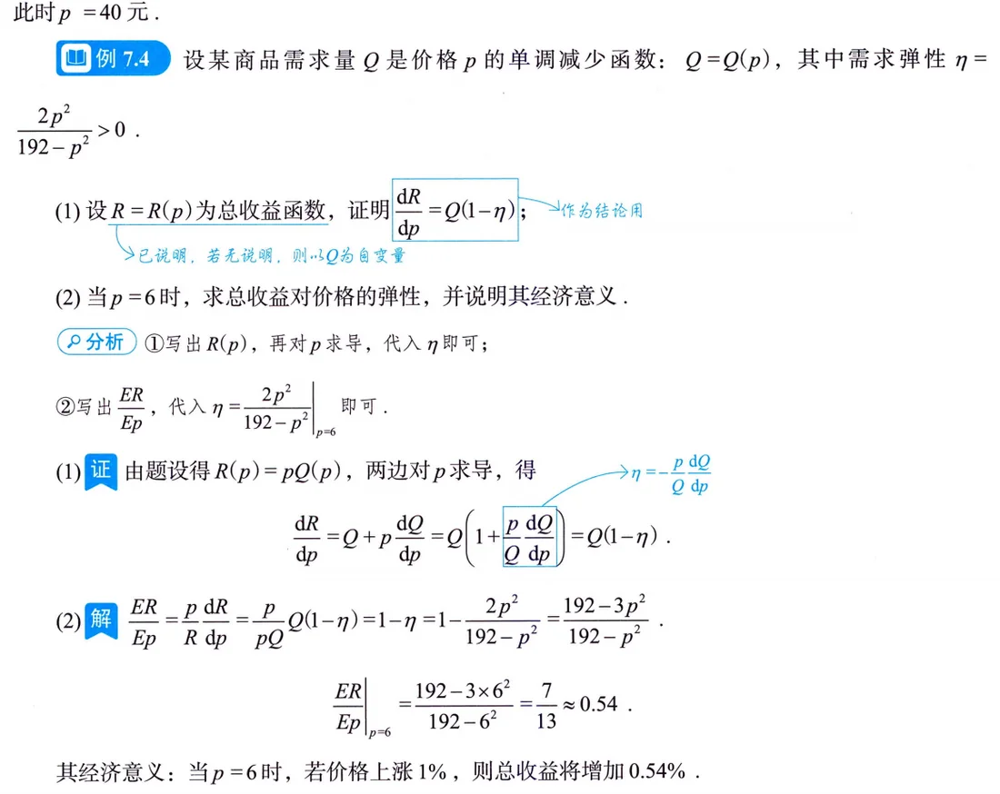
题面 设某商品的需求函数为 \(Q=Q(p)=192-p^2\)，求 \(p=6\) 时总收益对价格的弹性，并说明经济意义。（过程含需求弹性 \(\eta\) 的计算与核心恒等式的推导。）
思路 先算需求弹性 \(\eta\)（按题设 \(\eta>0\) 口径加负号），再把 \(R(p)=pQ(p)\) 两边对 \(p\) 求导，把 \(\eta\) 凑出来，最后套点弹性定义。 要点 需求弹性 \[ \eta=-\frac{p}{Q}\frac{dQ}{dp}=\frac{2p^2}{192-p^2}; \] 恒等式推导（本书点名可作结论用）：\[ \frac{dR}{dp}=Q+p\frac{dQ}{dp}=Q\Bigl(1+\frac{p}{Q}\frac{dQ}{dp}\Bigr)=Q(1-\eta), \] 于是总收益对价格的弹性 \[ \frac{ER}{Ep}=\frac{p}{R}\frac{dR}{dp}=\frac{p}{pQ}\cdot Q(1-\eta)=1-\eta=1-\frac{2p^2}{192-p^2}=\frac{192-3p^2}{192-p^2}. \] 代 \(p=6\)：\(\dfrac{192-108}{192-36}=\dfrac{84}{156}=\dfrac{7}{13}\approx 0.54\)。经济意义：\(p=6\) 时价格上涨 1%，总收益约增加 0.54%。 注 本题自带推导又自带结论——书上批注明示 \(\dfrac{dR}{dp}=Q(1-\eta)\) 可"作为结论用"，下一题例7.5 立刻兑现。顺带注意 \(1-\eta>0\) 恰好说明该价位 \(\eta<1\) 缺乏弹性，提价增收，与下一题互相印证。
例7.5 弹性判断收益变化方向（数三，选择题）
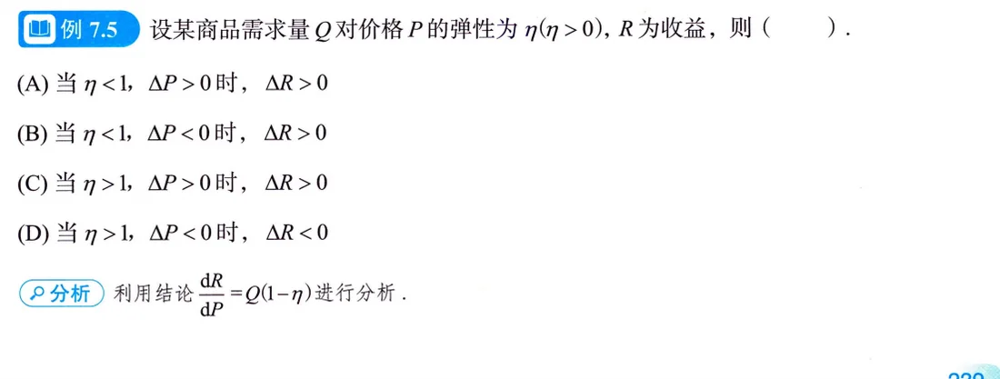
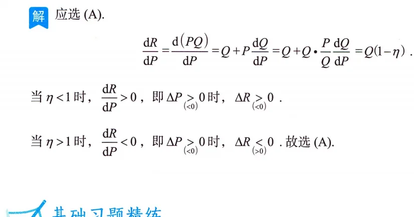
题面 设总收益函数与需求函数如上题框架，以 \(\eta\) 记需求价格弹性（\(\eta>0\) 口径），判断价格升降与收益增减的对应关系，选正确选项。
思路 不算具体数，全靠例7.4 的结论 \(\dfrac{dR}{dp}=Q(1-\eta)\) 定号：\(Q>0\) 恒成立，符号完全由 \(1-\eta\) 决定。 要点 \(\eta<1\) 时 \(\dfrac{dR}{dp}>0\)，提价（\(\Delta p>0\)）则收益增（\(\Delta R>0\)）；\(\eta>1\) 时 \(\dfrac{dR}{dp}<0\)，提价则收益减。对照选项，应选 (A)。 注 直观记法：\(\eta<1\) 缺乏弹性（买的人对价格不敏感）——提价划算；\(\eta>1\) 富有弹性（价格敏感）——降价走量划算，"薄利多销"的数学版。原书把两道题连排（先推结论再应用）本身就是"跨节综合"的微型示范，考试里这种"上一问结论喂下一问"的结构越来越常见。
易错点与技巧
- 相关变化率不要一上来就代数字：先写一般关系式（如 \(l=\sqrt{x^2+x^6}\)），两边对 \(t\) 求导，最后才代具体时刻的值（例7.1，印P235；自测题 1 的抛物线题同款路数，印P241 习题7.1）。
- \(a=\dfrac{dv}{ds}\cdot v\) 这个变形现在就抄进笔记本：解"含 \(s\)、\(v\) 不显含 \(t\)"的微分方程时它是钥匙，第15讲正式登场（印P234 手写批注）。
- 复利三公式先看清"一年计息几次"，考试会明确告知情形（印P235 注）；现值 \(A(t)=Re^{-rt}\) 与终值 \(Ae^{rt}\) 互为逆运算，别把方向搞反。
- 自变量口径别弄反：需求、供给对价格 \(p\)，成本、收益、利润对产量 \(Q\)（印P236–237 注）。求"收益对价格的弹性"时必须先把 \(R\) 写成 \(R(p)=pQ(p)\)。
- 弹性符号是重灾区：按定义 \(\eta_d<0\)，题设要求 \(\eta_d>0\) 时加负号 \(\eta_d=-\dfrac{p}{Q}Q'(p)\)（印P238 注）；例7.4 的 \(\eta=\dfrac{2p^2}{192-p^2}\) 用的就是后者，符号口径一乱 \(1-\eta\) 全盘翻车。
- 边际是"近似"：\(f(x_0+1)-f(x_0)\approx f'(x_0)\)，答经济意义时"约"字与"第 \(Q_0+1\) 件"的序数表述都不能丢（印P237、印P239）。
- 求最值收尾要有论证：唯一驻点 + 两侧导号（或 \(L''<0\)）才能下"最大"结论——一元连续函数区间上唯一极值点即最值点，例7.2、例7.3 都这么收尾（印P236、印P239）。
- 弹性是百分比灵敏度、无量纲：读法永远是"\(x\) 变 1%，\(y\) 变 \(|\eta|\)%"，别答成"变化多少个单位"——那是边际的话术（印P237）。
- 应用题起手三式定位：关系式（题给函数关系）、定义式（现值/边际/弹性定义）、约束式（如 \(r=0.06\)）——例7.2 的【分析】框就是模板，先写定义式再代关系式（印P236）。
考点与方法补充（站注）
本节是站方补充，不是原书内容；数学事实以原书为准，考频数据与规划建议来自公开真题统计与经验贴调研（2026-09 汇总）。
考频定位（站注·真题大数据）：本讲三块内容均属第三梯队——15 年里出现 5–8 次，但一考就是大题 10 分以上：数一的物理应用（做功、压力、变力那条线在第12讲展开）、数三的经济应用（差分方程、现值流量在后续讲）各自专属，命题泾渭分明。近年相关变化率有回潮迹象（数一数二选择/填空），数三经济应用大题（边际 + 弹性 + 最值三合一）隔些年考一次。这讲性价比极高：模板量全书最少，属于"低频高回报"，值得一次学透、考前再扫一遍。
分科复习策略（站注）：原书把目标直接写进讲首（印P233）——数一数二只需"了解导数的物理意义，会用导数描述物理量"，数三只需边际与弹性。对号入座后，另一半内容当阅读材料过一遍即可（考数一的不用背弹性句式，考数三的不用练相关变化率大题）。真题训练同样分科：做近十年真题时只精做自己考种的题，另一半看思路就好。
张宇方法论的印证（站注）：张宇反复强调"尽快结束纯听课阶段，自己动手最重要""计算能力是决定分数的第一因素"，强化36讲第 1 讲主题即「判定类型，做好计算」——本讲是这套思想最纯粹的练习场：题型判定（分科 → 三类模板）几乎不用灵感，剩下全是执行（求导、解方程、下结论），最适合闭卷限时自查。原书讲首那句"用数学工具解决应用问题，不会出现过难过于专业的问题"（印P233）也是同一意思：别怕背景，怕手生。配套《300 题》对应章节做完，检验标准可参考"随机抽 5 道大题独立完成、正确率 \(\ge\) 90%"。
与后续讲的衔接（站注）：相关变化率 + 微分方程 = 第15讲的物理综合大题（\(v\dfrac{dv}{ds}\) 在那里正式上岗）；积分学的物理应用（做功、压力、质心）与经济应用（现值、流量）在第12讲，正好对应原书"微分学中经济应用较多，积分学中物理应用较多"的注；数三的后手还有差分方程（强化阶段内容）。命题趋势上"跨章节综合题比重上升"（真题大数据），例7.4 → 例7.5 的"先推结论再套用"连排就是最小型的综合化示范，值得体会这种命题语感。
知识清单自测
自测题
1.（相关变化率，原书习题7.1）质点 \(P\) 沿抛物线 \(x=y^2\ (y>0)\) 移动，\(P\) 的横坐标 \(x\) 对时间的变化率为 \(5\ \mathrm{cm/s}\)。当 \(x=9\) 时，点 \(P\) 到原点 \(O\) 的距离对时间的变化率为多少？
查看答案
解 由 \(y^2=x\ (y>0)\) 知 \(s=\sqrt{x^2+y^2}=\sqrt{x^2+x}\)，则
\[ \frac{ds}{dt}=\frac{d\sqrt{x^2+x}}{dx}\cdot\frac{dx}{dt}=\frac{2x+1}{2\sqrt{x^2+x}}\cdot 5. \]
代 \(x=9\)：\(\dfrac{5\times 19}{2\sqrt{90}}=\dfrac{95}{6\sqrt{10}}\ \mathrm{cm/s}\)。
套路与例7.1 完全同构：几何关系（距离公式）+ 曲线方程消元，先建 \(s(x)\) 再链式求导，最后代时刻。
2.（复利三情形）银行年利率 \(r=8\%\)。(1) 按一年计息 2 次，现存入 \(10000\) 元，3 年后余额多少？(2) 改按连续复利，3 年后余额多少？
查看答案
解 (1) 一年计息 \(n=2\) 次：\[ A_3=10000\Bigl(1+\frac{0.08}{2}\Bigr)^{2\times3}=10000\times1.04^6\approx12653\ \text{（元）}. \]
(2) 连续复利：\[ A_3=10000e^{0.08\times3}=10000e^{0.24}\approx12712\ \text{（元）}. \]
计息越频繁余额越高，但 \(n\to\infty\) 时极限是 \(e^{rt}\)，不会无限膨胀；三种情形的选取看题面告知（印P235 注）。
3.（连续复利现值，仿例7.2）某设备投产后 \(t\) 年末可创收入 \(R(t)=50e^{\frac{1}{5}\sqrt t}\)（万元），银行年利率 \(r=5\%\)，按连续复利计息。设备收入现值最大的窖藏式问题：多少年后售出（收入折现）最划算？
查看答案
解 现值 \[ A(t)=R(t)e^{-rt}=50e^{\frac{1}{5}\sqrt t-0.05t},\qquad A'(t)=50e^{\frac{1}{5}\sqrt t-0.05t}\Bigl(\frac{1}{10\sqrt t}-0.05\Bigr). \] 令 \(A'(t)=0\) 得 \(\sqrt t=2\)，即 \(t_0=4\)；当 \(0<t<4\) 时 \(A'>0\)，\(t>4\) 时 \(A'<0\)，\(t_0=4\) 是唯一极大值点即最大值点。4 年后售出最划算。
完全照搬例7.2 的三式定位：定义式（现值）→ 关系式（收入函数）→ 约束式（\(r=0.05\)）。
4.（边际与最值，仿例7.3）某商品固定成本 \(100\) 元，可变成本 \(2\) 元/件，价格函数 \(p=10-\dfrac{Q}{100}\)（\(Q\) 为销量，产销平衡）。(1) 求 \(Q=200\) 时的边际利润并说明经济意义；(2) 求利润最大的销量、单价与最大利润。
查看答案
解 \(C=100+2Q\)，\(R=10Q-\dfrac{Q^2}{100}\)，\(L=8Q-\dfrac{Q^2}{100}-100\)，\(L'(Q)=8-\dfrac{Q}{50}\)。
(1) \(L'(200)=8-4=4\)（元），经济意义：销售第 201 件商品所得利润约为 4 元。
(2) 令 \(L'(Q)=0\) 得 \(Q=400\)，且 \(L''=-\dfrac{1}{50}<0\)，故利润最大。此时 \(p=10-\dfrac{400}{100}=6\)（元），最大利润 \[ L(400)=8\times400-\frac{400^2}{100}-100=3200-1600-100=1500\ \text{（元）}. \]
5.（弹性分析，仿例7.4/7.5）某商品需求函数 \(Q(p)=192-p^2\)（\(0<p<8\sqrt3\)）。(1) 求 \(p=6\) 时的需求价格弹性（按 \(\eta>0\) 口径）并说明经济意义；(2) 此时提价 1%，总收益约变化百分之几？(3) \(\eta=1.5\) 的另一商品提价 1%，收益约变化多少？
查看答案
解 (1) \(\eta=-\dfrac{p}{Q}Q'(p)=\dfrac{2p^2}{192-p^2}\)，代 \(p=6\) 得 \(\eta=\dfrac{72}{156}=\dfrac{6}{13}\approx0.46\)。经济意义：\(p=6\) 时价格上涨 1%，需求量约减少 0.46%。
(2) 由结论 \(\dfrac{dR}{dp}=Q(1-\eta)\)，\(\dfrac{ER}{Ep}=1-\eta=1-\dfrac{6}{13}=\dfrac{7}{13}\approx0.54\)：提价 1%，总收益约增加 0.54%（\(\eta<1\) 缺乏弹性，提价增收）。
(3) \(\eta=1.5>1\) 时 \(\dfrac{ER}{Ep}=1-1.5=-0.5\)：提价 1%，总收益约减少 0.5%；降价 1% 则约增加 0.5%——富有弹性，薄利多销。